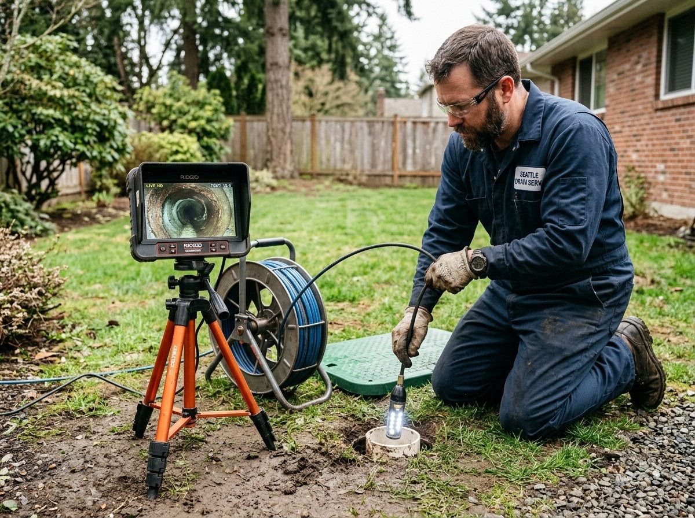
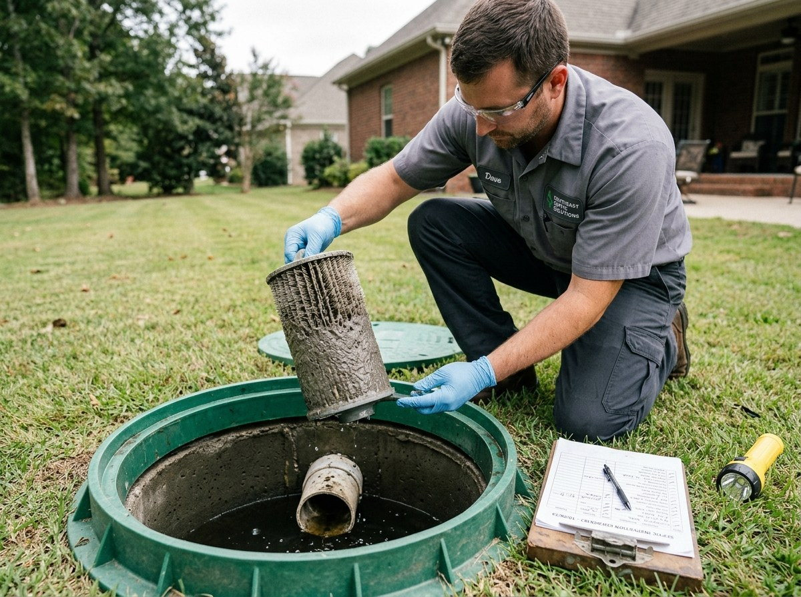
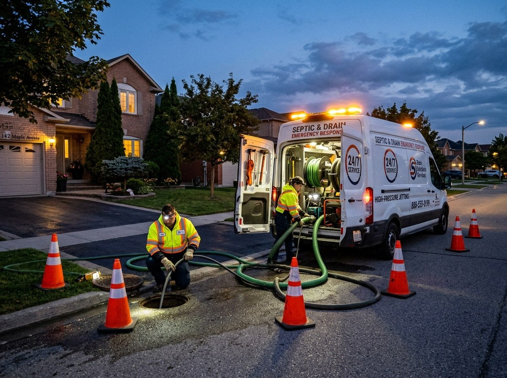
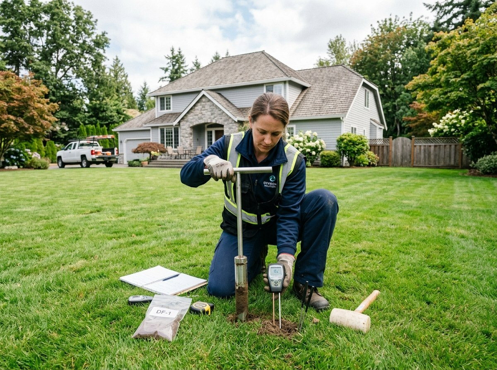
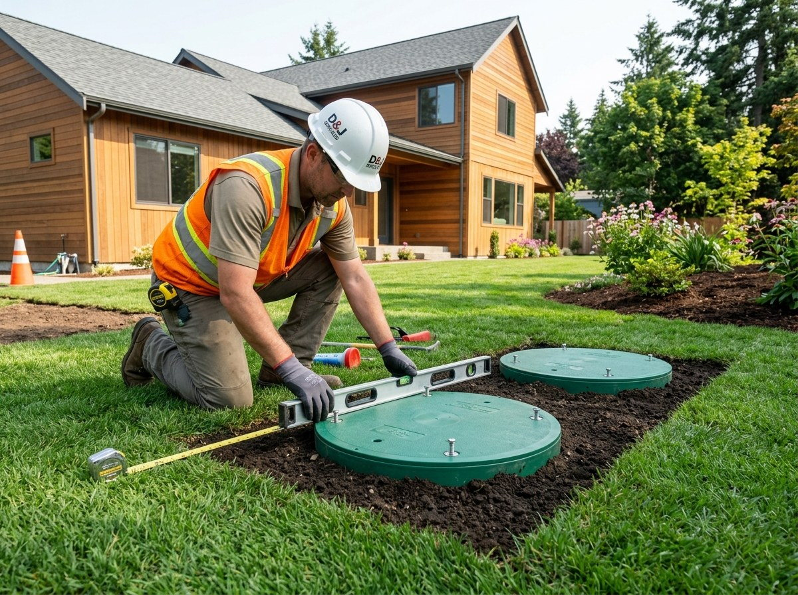
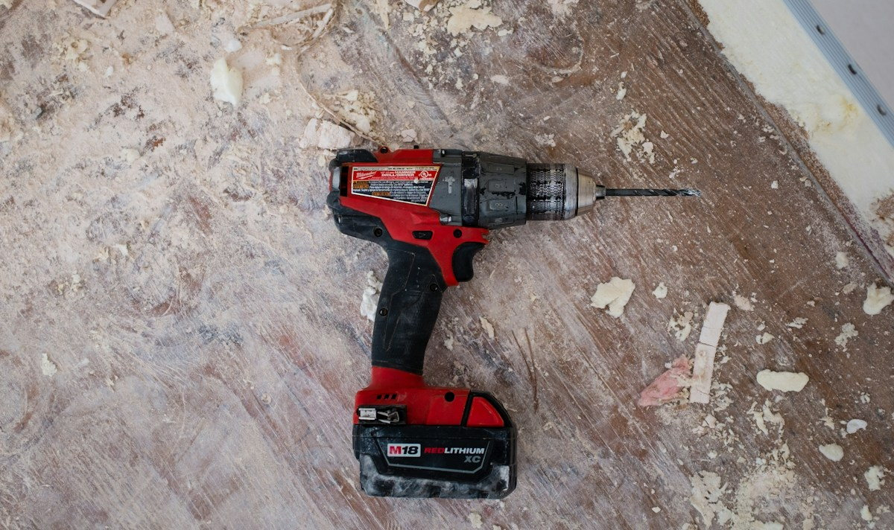
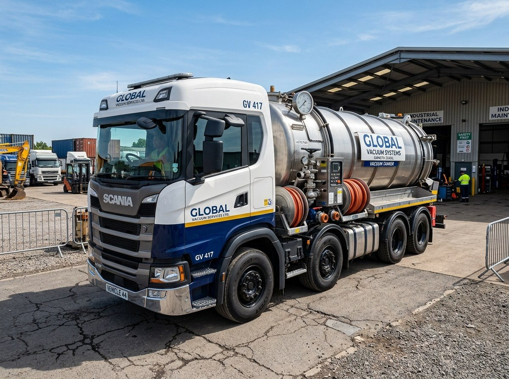

Pumping
Tank Pumping
Mechanized sludge and scum removal with a vacuum truck.
From INR 3,500
Whether you are due for routine pumping, buying a property or managing a backup, the work should start with an explanation. Each service includes a practical scope, typical duration and planning price, subject to onsite assessment.
Filter by the problem you are trying to solve. Every booking first confirms access, service limits and an estimate.
Mechanized sludge and scum removal with a vacuum truck.
Mechanized sludge and scum removal with a vacuum truck. We locate and safely open an accessible riser, record observations, pump the chamber, and explain next steps. Best for households due for scheduled maintenance.
Included: Tank measurement, extraction, visual check, service note.
Best for: Every 1-5 years depending on load.
Duration: 2-4 hours.
Safety note: All inspections and pumping are mechanized. Workers must never enter a septic tank. Exact access, scope and cost are confirmed before the visit.

A camera survey checks accessible pipes for roots, cracks and blockages without digging first.
A camera survey checks accessible pipes for roots, cracks and blockages without digging first. We review footage, explain limits and flag any repair needs. Useful when several fixtures gurgle or a seller cannot produce maintenance records.
Included: Camera pass, findings, footage summary.
Best for: Slow drains, recurring backups.
Duration: 1-2 hours.
Safety note: All inspections and pumping are mechanized. Workers must never enter a septic tank. Exact access, scope and cost are confirmed before the visit.

Scheduled reviews reduce surprises and help keep a written service history.
Scheduled reviews reduce surprises and help keep a written service history. We provide an inspection calendar, tank health checks and reminders without claiming that additives replace pumping. Ideal for busy multi-person households.
Included: Planned checks, reminders, service notes.
Best for: Regular family or rental homes.
Duration: 45-90 minutes / check.
Safety note: All inspections and pumping are mechanized. Workers must never enter a septic tank. Exact access, scope and cost are confirmed before the visit.

A backup needs calm action and fast triage.
A backup needs calm action and fast triage. Stop heavy water use, avoid the affected area, and let a trained crew inspect access and determine if pumping or a line clearance is needed. No unsafe entry is permitted.
Included: Safety triage, vacuum response where appropriate.
Best for: Sewage backup or pooling.
Duration: Response subject to location.
Safety note: All inspections and pumping are mechanized. Workers must never enter a septic tank. Exact access, scope and cost are confirmed before the visit.

A suspiciously lush green strip, persistent sogginess or odors can point to an overloaded drain field.
A suspiciously lush green strip, persistent sogginess or odors can point to an overloaded drain field. Our non-invasive review checks the layout, drainage symptoms and maintenance history before suggesting more intrusive work.
Included: Site walk, symptom map, written next steps.
Best for: Wet lawn, standing water or odors.
Duration: 1-3 hours.
Safety note: All inspections and pumping are mechanized. Workers must never enter a septic tank. Exact access, scope and cost are confirmed before the visit.

Start with the tank volume, household load and a real service log.
Start with the tank volume, household load and a real service log. We explain riser access, safe landscaping boundaries and what never to flush. A simple plan now avoids expensive guesswork later.
Included: Baseline notes, homeowner guide, first reminder.
Best for: New builds and new owners.
Duration: 1-2 hours.
Safety note: All inspections and pumping are mechanized. Workers must never enter a septic tank. Exact access, scope and cost are confirmed before the visit.

Where an outlet filter is installed and safely accessible, we inspect it for buildup and service it using appropriate equipment.
Where an outlet filter is installed and safely accessible, we inspect it for buildup and service it using appropriate equipment. A neglected filter can make drainage symptoms harder to diagnose. We also check the surrounding outlet condition.
Included: Accessible filter inspection, cleaning, notes.
Best for: Homes with outlet filters.
Duration: 45-90 minutes.
Safety note: All inspections and pumping are mechanized. Workers must never enter a septic tank. Exact access, scope and cost are confirmed before the visit.
Septic issues can be easy to overlook during a house purchase.
Septic issues can be easy to overlook during a house purchase. We review service history, visible access, drainage symptoms and available site diagrams, then advise whether deeper checks are justified. The report documents known limits.
Included: Visual review, questions, written summary.
Best for: Buyers and property managers.
Duration: 2-3 hours.
Safety note: All inspections and pumping are mechanized. Workers must never enter a septic tank. Exact access, scope and cost are confirmed before the visit.
Check how safely and easily the crew can reach your septic tank.
A safe service starts with a known, accessible tank lid or riser. Our crew checks the visible access location, usable clearance, cover condition and approximate hose route from the street.
Included: Visual access review, hose-distance estimate, site constraints and written recommendations.
Best for: Homeowners without a clear tank location, properties with buried covers, and sites with narrow gates or steep slopes.
Typical duration: 45-90 minutes, depending on site accessibility.
Price: From INR 1,400; final estimate after access assessment.
Safety: This is a non-entry visual inspection. We do not open a tank where conditions are unsafe.
Different symptoms call for different first steps. Neither is a guaranteed fix for a damaged drain field.
| Situation | Pumping | Inspection |
|---|---|---|
| Due by service history | Typically appropriate | Useful for unusual findings |
| Recurring gurgling or slow drains | Only if solids are due | Often the better diagnostic start |
| Standing water above field | May ease short-term load | Site and field assessment required |
| Home purchase | Based on documented history | Useful pre-purchase evidence |
Mechanized extraction and inspection tools let a crew work without entering a tank.

Sealed suction equipment transports wastewater to an authorized facility. Access and vehicle stand-off distance must be checked before dispatch.
Camera surveys show accessible internal line conditions and help locate roots or breakages. They cannot see through opaque tank walls.
Non-entry measurement helps judge whether scum and sludge leave enough working volume inside a tank.
Example service areas: RS Puram, Peelamedu, Saibaba Colony, Ganapathy, Saravanampatti, Singanallur, Sulur and Avinashi Road. Travel and emergency availability vary.
Arrange a mechanized pumping or inspection visit before a minor issue turns into a very expensive weekend.